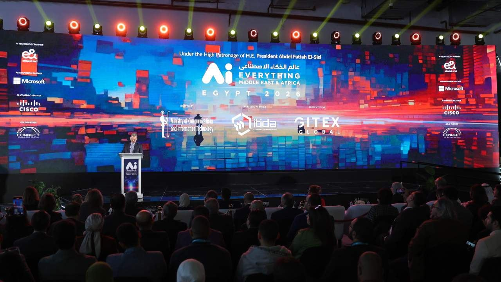

Conferences · AI
Ai Everything MEA Egypt 2027
- Dates
- –
- Venue
- Egypt International Exhibition Center (EIEC)
- Location
- Cairo, Egypt
- Format
- In-person
- Category
- AI
- Industry
- AI exhibition and summit
- Organiser
- AI Everything Egypt
- Official website
- https://www.aieverythingegypt.com/
About
Official site title and schema.org Event (fetched 24 Nov 2026): 'Ai Everything MEA Egypt | 1-2 June 2027', startDate 2027-06-01, endDate 2027-06-02. Venue named as Egypt International Exhibition Center (EIEC), Nasr City, Cairo. Page body still contains leftover 'June, 2027' wording and 2026 partner labels; the structured event dates are used. Egypt dates are local (Africa/Cairo).
Topics: artificial intelligence, digital infrastructure, startups, investment.
No organiser attendance figure found on the official pages checked (24 Nov 2026). Ranked by an estimated size tier 'medium' (our judgement from format, venue and scale, not an official number).
Sources
- Official — https://www.aieverythingegypt.com/